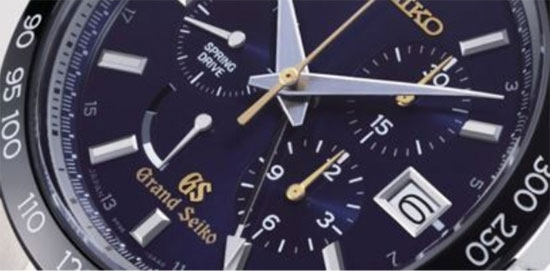

RTC定义是什么?简单认识RTC芯片结构及模块功能
RTC是什么？实时时钟(Real-Time Clock),缩写为RTC，它是一种集成电路，一般被称为时钟芯片。RTC属于消费类电子产品，在日常生活中应用非常广泛，它可以帮助人们获得精确的实时时间，也可以为电子系统提供精确的时间基准。
对于需要高精度计时的应用，我们都会选用32.768K的时钟晶振。主要原因是因为32768经过15分频，刚好是1Hz(2^15 = 32768 )，且刚好够填满一个计数器。并且很多设备都支持掉电之后RTC独立工作，因此有很高的省电、续航能力，如今RTC大多使用精度较高的晶振作为时钟源。

RTC的功能（电子设备计时器）
1、高精度
2、提供日历信息
3、低电压=延长电池使用寿命
4、各种其它特性，比如闹钟，定时器等
5、串行接口
RTC的时间误差主要是由rtc中晶振的频率误差所造成的，这种误差很大程度是由温度发生变化所引起，因此，通过温度对晶振谐振频率的误差进行校正，是提高时钟精度的一种有效方法。
石英晶体谐振频率误差补偿方法：是在晶振谐振频率随着温度的变化存在误差已知的基础上, 对产生1Hz频率的分频计数器进行精确补偿的方法。
RTC重要的功能是支持日历功能，对于时间来说，无论快慢都是误差，而匹配电容在RTC的外围器件上起到非常重要的作用，它可以适当修正晶体与RTC之间匹配问题
RTC内部结构

而Epson RTC实时时钟模块将硬件设计化繁为简，由IC和晶体组成，具备更优的时间精度及更高的可靠性，抵抗灰尘和湿度的影响。
同时，与传统的集成RTC功能来说，晶振从外部连接到RTC具有低功耗、超预期的时间精度、高稳定、简单易用等优点。
Measure
Measure